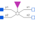
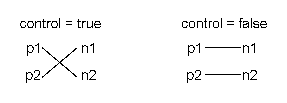
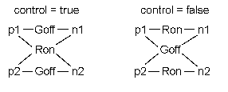
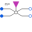

IdealIntermediateSwitchIdeal intermediate switch |

|
Information
This information is part of the Modelica Standard Library maintained by the Modelica Association.
The intermediate switch has four switching contact pins p1, p2, n1, and n2. The switching behaviour is controlled by the input signal control. If control is true, the pin p1 is connected to the pin n2, and the pin p2 is connected to the pin n1. Otherwise,if control is false, the pin p1 is connected to n1, and the pin p2 is connected to n2.

In order to prevent singularities during switching, the opened switch has a (very low) conductance Goff and the closed switch has a (very low) resistance Ron.

The limiting case is also allowed, i.e., the resistance Ron of the closed switch could be exactly zero and the conductance Goff of the open switch could be also exactly zero. Note, there are circuits, where a description with zero Ron or zero Goff is not possible.
Please note: In case of useHeatPort=true the temperature dependence of the electrical behavior is not modelled. The parameters are not temperature dependent.
Parameters (4)
| useHeatPort |
Value: false Type: Boolean Description: =true, if heatPort is enabled |
|---|---|
| T |
Value: 293.15 Type: Temperature (K) Description: Fixed device temperature if useHeatPort = false |
| Ron |
Value: 1e-5 Type: Resistance (Ω) Description: Closed switch resistance |
| Goff |
Value: 1e-5 Type: Conductance (S) Description: Opened switch conductance |
Connectors (6)
| heatPort |
Type: HeatPort_a Description: Conditional heat port |
|
|---|---|---|
| p1 |
Type: PositivePin |
|
| p2 |
Type: PositivePin |
|
| n1 |
Type: NegativePin |
|
| n2 |
Type: NegativePin |
|
| control |
Type: BooleanInput Description: true => p1--n2, p2--n1 connected, otherwise p1--n1, p2--n2 connected |
Used in Components (1)
|  |
Modelica.Electrical.MultiPhase.Ideal
Multiphase ideal intermediate switch |